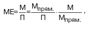
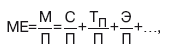

| Необходимым условием организации производства продукции является обеспечение его материальными ресурсами: сырьем, материалами, топливом, энергией, полуфабрикатами и т. д. В процессе потребления материальных ресурсов в производстве происходит их трансформация в материальные затраты, поэтому уровень их расходования определяется через показатели, исчисленные, исходя из суммы материальных затрат. Для оценки эффективности материальных ресурсов используется система обобщающих и частных показателей. Применение обобщающих показателей в анализе позволяет получить общее представление об уровне эффективности использования материальных ресурсов и резервах его повышения. К обобщающим показателям эффективности использования материальных затрат относятся материалоемкость продукции и материалоотдача. Материалоемкость продукции рассчипы-вается как отношение суммы материальных затрат к стоимости произведенной продукции (и показывает материальные затраты, приходящиеся на 1 руб. выпущенной продукции): МЕ=МЗ/П. Материалоотдача – показатель обратный материалоемкости, характеризует выпуск продукции на 1 руб. материальных ресурсов: МО=П/МЗ. Применение обобщающих показателей в анализе позволяет получить общее представление об уровне эффективности использования материальных ресурсов. Повышение эффективности использования материальных ресурсов обусловливает сокращение материальных затрат на производство продукции, снижение ее себестоимости и рост прибыли. В качестве обобщающих показателей эффективности использования материальных ресурсов рассматривают также удельный вес материальных затрат в себестоимости продукции, коэффициент использования материалов (отношение фактических материальных затрат к материальным затратам по плану при фактическом выпуске). Частные показатели используются для характеристики эффективности потребления отдельных элементов материальных ресурсов (основных, вспомогательных материалов, топлива, энергии и др.), а также для установления снижения материалоемкости отдельных изделий (удельной материалоемкости – отношения стоимости всех потребленных изделием материалов к цене изделия). В зависимости от специфики производства частными показателями могут быть: сырьеемкость – в перерабатывающей отрасли; металлоемкость – в машиностроении и металлообрабатывающей промышленности; топливоемкость и энергоемкость – на предприятиях ТЭЦ; полуфабрикатоемкость – в сборочных производствах и т. д. Удельная материалоемкость отдельных изделий может быть исчислена как в стоимостном, так и в условно-натуральном и натуральном выражении. В процессе анализа фактический уровень показателей эффективности использования материалов сравнивается с плановым, изучается их динамика и причины изменения. Также проводится факторный анализ показателей эффективности. Так, на изменение материалоемкости ресурсов оказывают влияние следующие факторы (представленные в виде произведения):  где – Мпрям/П – материалоемкость по прямым затратам ресурсов; М/Мпрям -коэффициент соотношения общих и прямых материальных затрат. В производстве продукции различные материалы играют разную роль и дают разную отдачу. Поэтому в методике анализа материалоемкости можно также использовать аддитивную факторную модель материалоемкости:  где С – сырье; ТП– топливо; Э – энергия и т. д. (в качестве факторов представлены частные показатели эффективности использования материальных ресурсов: сырьеемкость, топливоем-кость, энергоемкость). Влияние факторных показателей на результативный в данном случае определяется прямым счетом. |